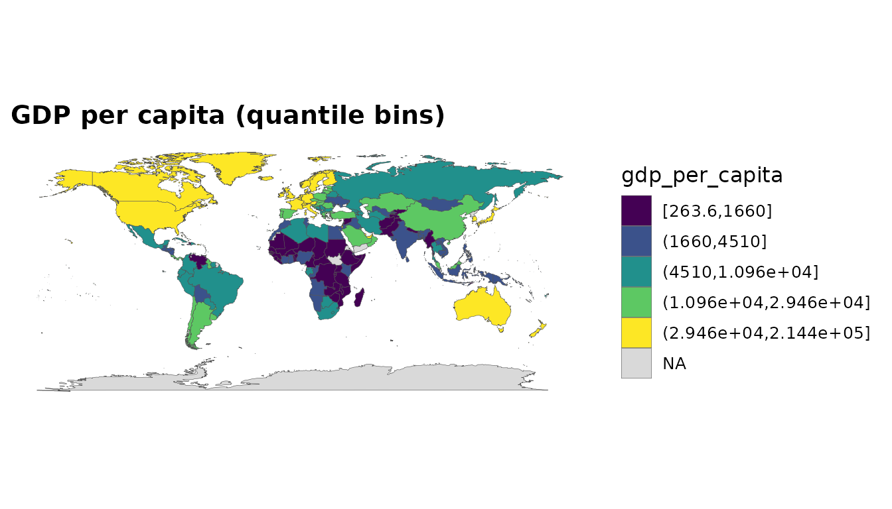
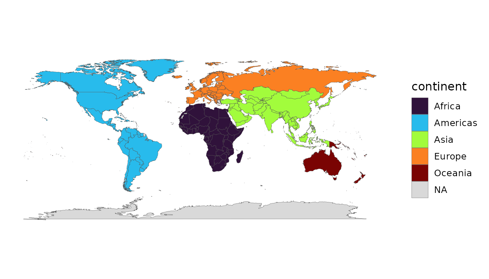
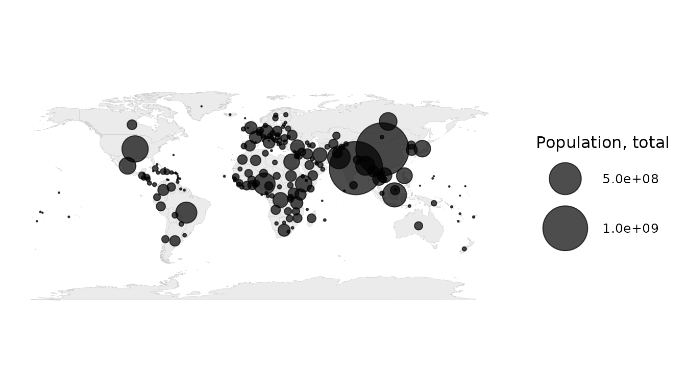
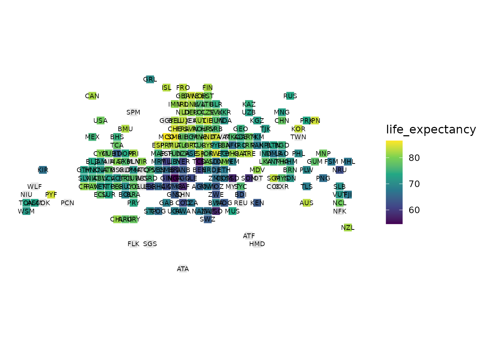
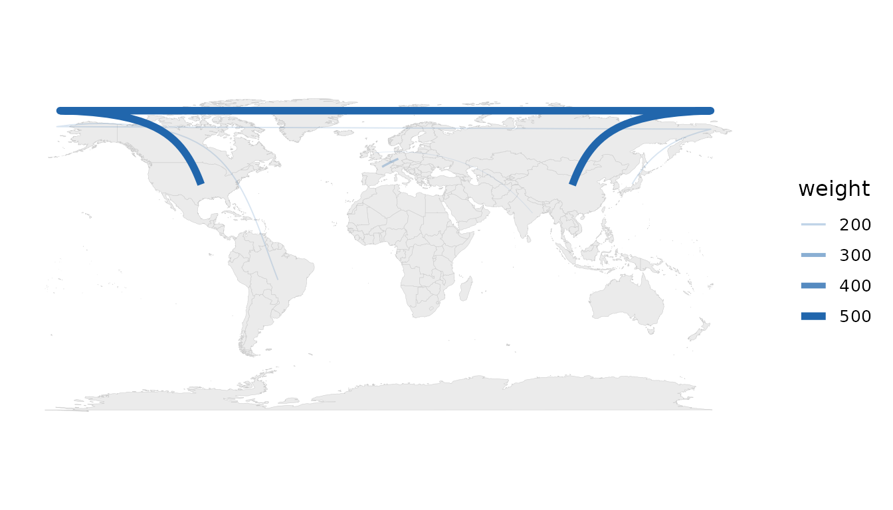

countryatlas: Joining World Data to Maps on the ISO Spine
Youzhi Yu University of Chicago
June 24, 2026
Source:vignettes/countryatlas.Rmd
countryatlas.RmdAbstract
Joining country-level data across independent sources is deceptively
hard: the same country is spelled "US",
"U.S.", "United States" and
"United States of America", and a naïve join treats them as
different entities. countryatlas resolves this friction
by adopting ISO 3166 codes as a universal join key and by stitching
together three otherwise disjoint resources — map geometry, World Bank
development indicators, and a comprehensive country-code crosswalk —
into a single, map-ready table. This vignette presents the package’s
design philosophy, its complete functional vocabulary, and worked
examples spanning data assembly, the join engine, diagnostics, reference
data, analysis helpers and a full grammar of honest cartographic
displays. All examples run offline against a bundled data snapshot.
Introduction
The package rests on a single conviction: if a task does not make it easier to get country data onto a map — or to make that map honest — it does not belong here. Concretely, three packages are combined:
-
ggplot2::map_data("world")(or Natural Earth viasf) supplies polygon geometry, i.e. where countries are; -
WDIsupplies World Bank indicators, i.e. what is true about them; -
countrycodesupplies the crosswalk of ISO codes, continents and regions that makes a reliable join possible.
Three design commitments follow. First, the happy path is one
call: world_data(2020) returns a tibble ready to
map. Second, the ISO code is the spine: every function
speaks iso3c/iso2c internally and exposes it,
so anything the package produces joins to anything else — and to the
user’s own data. Third, no country is lost silently:
entities that map backends spell idiosyncratically are matched
through a curated override table rather than dropped, and unmatched
values are reported explicitly.
To keep every example reproducible without a network connection, this
vignette uses the bundled world_snapshot dataset, a curated
set of indicators for one recent year.
snapshot <- world_snapshot$countries
dplyr::glimpse(snapshot)
#> Rows: 215
#> Columns: 10
#> $ iso3c <chr> "AFG", "ALB", "DZA", "ASM", "AND", "AGO", "ATG", "ARG"…
#> $ iso2c <chr> "AF", "AL", "DZ", "AS", "AD", "AO", "AG", "AR", "AM", …
#> $ country <chr> "Afghanistan", "Albania", "Algeria", "American Samoa",…
#> $ continent <chr> "Asia", "Europe", "Africa", "Oceania", "Europe", "Afri…
#> $ region <chr> "South Asia", "Europe & Central Asia", "Middle East & …
#> $ income <fct> Low income, Upper middle income, Upper middle income, …
#> $ gdp_per_capita <dbl> 377.6656, 5867.6510, 4544.4669, 13709.0975, 39780.4153…
#> $ population <dbl> 40578842, 2451636, 45477389, 48342, 79705, 35635029, 9…
#> $ life_expectancy <dbl> 65.61700, 78.76900, 76.12900, 72.75200, 84.01600, 64.2…
#> $ co2_per_capita <dbl> 0.278420956, 1.845257616, 4.160058529, 0.002068595, NA…Core data assembly
world_data()
The headline function is generalised but backward-compatible. The classic call returns the polygon-backed, enriched tibble exactly as before:
# Live World Bank API call (not evaluated here to keep the vignette offline):
world_data(2020)
world_data(
2020,
indicator = c(life_exp = "SP.DYN.LE00.IN", co2 = "EN.GHG.CO2.PC.CE.AR5"),
geometry = "sf",
region = "Africa"
)The indicator argument accepts one or many WDI codes; a
named vector drives clean column names. A range of
years (2000:2020) yields a panel keyed on
iso3c and year. The geometry
argument switches between the classic "polygon" backend, a
modern "sf" backend with real projections, and
"none" for pure analysis.
country_data() and attach_geometry()
For analysis you usually want one tidy row per country, not ~99,000
polygon vertices. country_data() provides exactly that, and
geometry is attached only at draw time:
mapdf <- attach_geometry(snapshot, geometry = "polygon")
dim(mapdf)
#> [1] 99338 15Visualising: the choropleth and beyond
One-line choropleths
world_map() encapsulates the plotting boilerplate and
offers several honest styles. A continuous fill on a skewed indicator
hides most of the variation, so binned and quantile styles are
first-class:
world_map(mapdf, gdp_per_capita, style = "quantile",
title = "GDP per capita (quantile bins)")
world_map(mapdf, continent, style = "categorical")
Proportional-symbol maps
Totals (population, total emissions) are misrepresented by a choropleth because large values hide in small countries. A bubble map at country centroids is the right idiom:
bubble_map(snapshot, population)
Equal-area tile grids
Tiny states vanish on a geographic map. An equal-area tile grid gives every country the same visual weight:
tile_map(snapshot, life_expectancy)
Flow maps
Origin–destination data (trade, migration, flights) is drawn as great-circle arcs, with both endpoints resolved to centroids automatically:
flows <- data.frame(
from = c("China", "Germany", "Brazil", "India"),
to = c("United States", "France", "Japan", "United Kingdom"),
weight = c(500, 200, 150, 120)
)
flow_map(flows, from, to, weight)
The join engine
The package’s mission, exposed for the reader’s own data. Given a
frame keyed on messy names, standardize_country() attaches
ISO codes and classifications:
messy <- data.frame(
nation = c("U.S.", "S. Korea", "Czechia", "Kosovo", "Cote d'Ivoire"),
value = c(10, 8, 6, 4, 7)
)
standardize_country(messy, nation, warn = FALSE)
#> # A tibble: 5 × 6
#> nation value iso3c iso2c continent region
#> <chr> <dbl> <chr> <chr> <chr> <chr>
#> 1 U.S. 10 USA US Americas North America
#> 2 S. Korea 8 KOR KR Asia East Asia & Pacific
#> 3 Czechia 6 CZE CZ Europe Europe & Central Asia
#> 4 Kosovo 4 XKX XK Europe Europe & Central Asia
#> 5 Cote d'Ivoire 7 CIV CI Africa Sub-Saharan Africajoin_world() goes one step further — auto-detecting the
country column, standardising it and attaching geometry — while
country_join() reconciles two independent tables that each
key on country names:
left <- data.frame(country = c("Czechia", "South Korea"), gdp = c(1, 2))
right <- data.frame(nation = c("Czech Republic", "Korea, Rep."), pop = c(10, 51))
country_join(left, right, country, nation)
#> # A tibble: 2 × 5
#> country gdp iso3c nation pop
#> <chr> <dbl> <chr> <chr> <dbl>
#> 1 Czechia 1 CZE Czech Republic 10
#> 2 South Korea 2 KOR Korea, Rep. 51Diagnostics: never lose a country silently
check_country_match() is a pre-flight report;
wdj_overrides() is the curated match table that replaces
the old drop-list; and audit_coverage() reports missingness
before a half-empty map is published.
check_country_match(c("USA", "Cote d'Ivoire", "Yugoslavia", "Wakanda"))
#> # A tibble: 4 × 4
#> input iso3c matched suggestion
#> <chr> <chr> <lgl> <chr>
#> 1 USA USA TRUE NA
#> 2 Cote d'Ivoire CIV TRUE NA
#> 3 Yugoslavia NA FALSE Yugoslavia
#> 4 Wakanda NA FALSE Canada
audit_coverage(snapshot)$na_rates
#> # A tibble: 4 × 4
#> indicator n n_missing na_rate
#> <chr> <int> <int> <dbl>
#> 1 gdp_per_capita 215 9 0.0419
#> 2 population 215 0 0
#> 3 life_expectancy 215 0 0
#> 4 co2_per_capita 215 12 0.0558The entities the previous version dropped — Kosovo, Micronesia, the Virgin Islands and a dozen others — are now matched:
dropped <- c("Kosovo", "Micronesia", "Virgin Islands", "Canary Islands",
"Saint Martin")
standardize_country(data.frame(region = dropped), region, warn = FALSE)
#> # A tibble: 5 × 4
#> iso3c iso2c continent region
#> <chr> <chr> <chr> <chr>
#> 1 XKX XK Europe Europe & Central Asia
#> 2 FSM FM Oceania East Asia & Pacific
#> 3 VIR VI Americas Latin America & Caribbean
#> 4 ESP ES Europe Europe & Central Asia
#> 5 MAF MF Americas Latin America & CaribbeanReference data and code translation
convert_country() exposes the full countrycode
vocabulary with first-class shortcuts for the high-value schemes:
convert_country(c("Japan", "Brazil", "Germany"), to = "flag")
#> [1] "🇯🇵" "🇧🇷" "🇩🇪"
convert_country(c("Japan", "Brazil", "Germany"), to = "currency")
#> [1] "JPY" "BRL" "EUR"Country-group membership is a curated, dated table:
country_groups("G7")
#> # A tibble: 7 × 3
#> group iso3c country
#> <chr> <chr> <chr>
#> 1 G7 CAN Canada
#> 2 G7 FRA France
#> 3 G7 DEU Germany
#> 4 G7 ITA Italy
#> 5 G7 JPN Japan
#> 6 G7 GBR United Kingdom
#> 7 G7 USA United States
in_group(c("France", "United States", "Japan", "Brazil"), "EU")
#> [1] TRUE FALSE FALSE FALSEThe package also bundles country_meta (static
per-country attributes), common_indicators (a friendly
indicator catalogue), country_groups_tbl and
world_tiles.
Analysis helpers
Small, in-spirit transforms that keep an analysis from leaving the package mid-pipeline:
snapshot |>
rank_countries(gdp_per_capita) |>
filter(rank <= 5) |>
select(country, gdp_per_capita, rank, percentile)
#> # A tibble: 5 × 4
#> country gdp_per_capita rank percentile
#> <chr> <dbl> <int> <dbl>
#> 1 Bermuda 109643. 2 0.995
#> 2 Ireland 97794. 4 0.985
#> 3 Luxembourg 107467. 3 0.990
#> 4 Monaco 214360. 1 1
#> 5 Switzerland 90605. 5 0.980
snapshot |>
aggregate_regions(population, by = "region", fun = "sum")
#> # A tibble: 8 × 2
#> region population
#> <chr> <dbl>
#> 1 East Asia & Pacific 2356430840
#> 2 Europe & Central Asia 922299160
#> 3 Latin America & Caribbean 649887983
#> 4 Middle East & North Africa 498069857
#> 5 North America 373018004
#> 6 South Asia 1932289074
#> 7 Sub-Saharan Africa 1229208573
#> 8 NA 3220137Performance and offline use
World Bank fetches are memoised with an optional on-disk cache, and
multiple indicators are fetched in parallel where the platform supports
forking. The bundled world_snapshot makes every example
here run without the network. The cache can be cleared with
clear_wdi_cache().
Conclusion
countryatlas keeps its original soul — ISO codes as the
universal join key, one call to a map-ready table — and extends it into
a complete toolkit: any indicator and any year span, a modern
sf backend, an exposed join engine for the user’s own data,
honest diagnostics, curated reference data, analysis helpers, and a full
vocabulary of projected, area-honest maps.
Session information
sessionInfo()
#> R version 4.6.0 (2026-04-24)
#> Platform: x86_64-pc-linux-gnu
#> Running under: Ubuntu 24.04.4 LTS
#>
#> Matrix products: default
#> BLAS: /usr/lib/x86_64-linux-gnu/openblas-pthread/libblas.so.3
#> LAPACK: /usr/lib/x86_64-linux-gnu/openblas-pthread/libopenblasp-r0.3.26.so; LAPACK version 3.12.0
#>
#> locale:
#> [1] LC_CTYPE=C.UTF-8 LC_NUMERIC=C LC_TIME=C.UTF-8
#> [4] LC_COLLATE=C.UTF-8 LC_MONETARY=C.UTF-8 LC_MESSAGES=C.UTF-8
#> [7] LC_PAPER=C.UTF-8 LC_NAME=C LC_ADDRESS=C
#> [10] LC_TELEPHONE=C LC_MEASUREMENT=C.UTF-8 LC_IDENTIFICATION=C
#>
#> time zone: UTC
#> tzcode source: system (glibc)
#>
#> attached base packages:
#> [1] stats graphics grDevices utils datasets methods base
#>
#> other attached packages:
#> [1] dplyr_1.2.1 ggplot2_4.0.3 countryatlas_2.0.0
#>
#> loaded via a namespace (and not attached):
#> [1] sass_0.4.10 utf8_1.2.6 generics_0.1.4 class_7.3-23
#> [5] KernSmooth_2.23-26 digest_0.6.39 magrittr_2.0.5 countrycode_1.8.0
#> [9] evaluate_1.0.5 grid_4.6.0 RColorBrewer_1.1-3 fastmap_1.2.0
#> [13] maps_3.4.3 jsonlite_2.0.0 e1071_1.7-17 viridisLite_0.4.3
#> [17] scales_1.4.0 stringdist_0.9.17 textshaping_1.0.5 jquerylib_0.1.4
#> [21] cli_3.6.6 rlang_1.2.0 withr_3.0.3 cachem_1.1.0
#> [25] yaml_2.3.12 otel_0.2.0 tools_4.6.0 parallel_4.6.0
#> [29] memoise_2.0.1 vctrs_0.7.3 R6_2.6.1 proxy_0.4-29
#> [33] lifecycle_1.0.5 classInt_0.4-11 fs_2.1.0 htmlwidgets_1.6.4
#> [37] ragg_1.5.2 pkgconfig_2.0.3 desc_1.4.3 pkgdown_2.2.0
#> [41] pillar_1.11.1 bslib_0.11.0 gtable_0.3.6 glue_1.8.1
#> [45] systemfonts_1.3.2 xfun_0.59 tibble_3.3.1 tidyselect_1.2.1
#> [49] knitr_1.51 farver_2.1.2 htmltools_0.5.9 rmarkdown_2.31
#> [53] labeling_0.4.3 compiler_4.6.0 S7_0.2.2